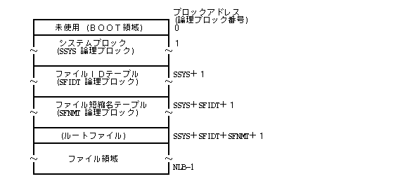
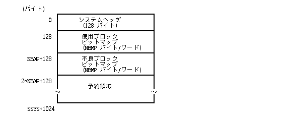
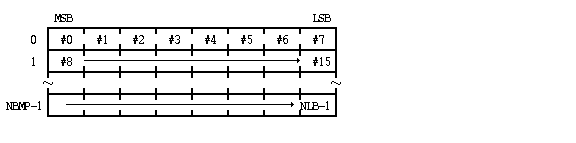
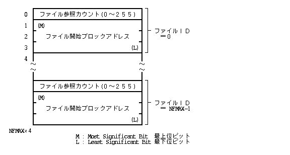
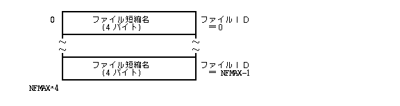
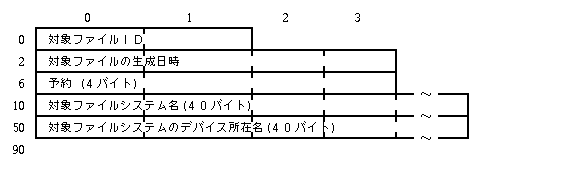
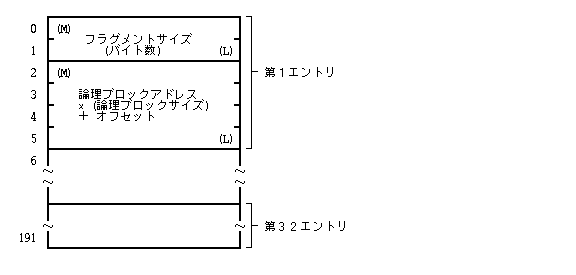
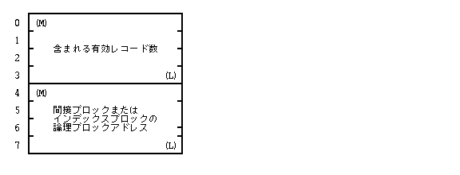
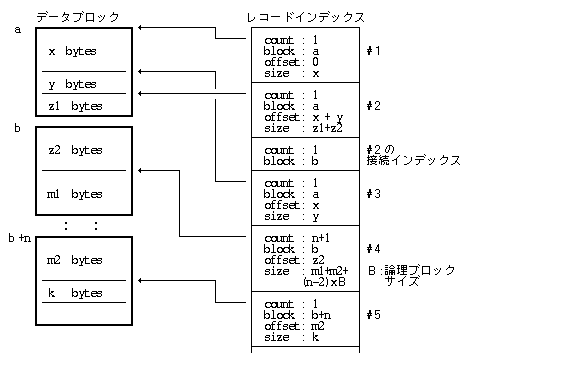
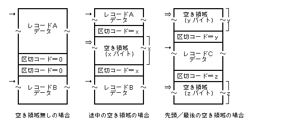

TRON仕様 , データ 交換媒体 あるフロッピーディスク 標準Формат / Синтаксис 規定している. これ , 基本的 додатокプログラム, およびдодатокデータ 交換用フロッピーディスク 対して み適用される , マシン 依存したСистема (System)フロッピーディスク等 場合 також 同一Формат / Синтаксис あるこ та 望ましい.
フロッピーディスク セクタ 物理ブロック та також 呼び, 物理的なアクセス 単位 та なる. また, 論理的なアクセス/アドレシング 単位 論理ブロック та 呼び, 連続した n 個 物理ブロック(セクタ)から構成される. 論理ブロック 大きさ 標準フ ロッピーディスク 1024 バイト та する.
単 ブロック та いった場合 論理ブロック 示し, 論理ブロック単位 アドレス ブロックアドレス та 呼ぶ.
最大論理ブロック数, 最大Файл (File)参照カウント 制限 緩和した拡張Формат / Синтаксис ある. 拡張Формат / Синтаксис також 基本的 標準Формат / Синтаксис та 同一 ある. 拡張Формат / Синтаксис 関して , 標準Формат / Синтаксис та 異なる部分 み記述する.
標準フロッピーディスク 以下 示す全体 構成 持つ.

Система (System)ブロック Файл (File)Система (System)全体 情報 保持するブロック あり, 以下 示す構成 持つ.

Система (System)ヘッダ , 128 バイトから構成され, 以下 構成 持つ. こ 部分 Файл (File)Система (System) 生成時 作成され, 以後, "*" 付けたデータ以外 変更されない.
各データ 内容 以下 示す. 各データ 上位バイト 先(若いアドレス) くるビッグエンディアンФормат / Синтаксис ある.
| 標準Формат / Синтаксис 場合 | 0x42FE |
| 拡張Формат / Синтаксис 場合 | 0x52FE |
| 標準Формат / Синтаксис 場合 | 0x6400 |
| 拡張Формат / Синтаксис 場合 | 0x6401 |
| SFIDT | = (最大Файл (File)数×Файл (File)IDテーブル 1エントリバイト数) / 論理ブロック バイト数 |
| = (NFMAX×4)/1024 |
| SFNMT | = (最大Файл (File)数×Файл (File)短縮名テーブル 1エントリバイト数) / 論理ブロック バイト数 |
| = (NFMAX×4)/1024 |
| 標準Формат / Синтаксис 場合 | |
| NBMP | ≧ 論理ブロック 総数/8 |
| ≧ NLB/8 | |
| 拡張Формат / Синтаксис 場合 | |
| NBMP | ≧ 論理ブロック 総数/32 |
| ≧ NLB/32 | |
0x0021 та なる.
| 0(レベル0) | アクセス管理 行なわない. |
| 1(レベル1) | アクセス管理 部分的 行なう. |
| 2(レベル2) | アクセス管理 完全 行なう. |
Растрове зображення (Bitmap) 論理ブロック 管理 使用され, 使用ブロックРастрове зображення (Bitmap) та 不良ブロックРастрове зображення (Bitmap) 2つ ある.
1 つ 論理ブロック 1つ ビット 一対一対応し, 使用ブロックРастрове зображення (Bitmap) , "0" 未使用, "1" 使用中また 不良 示し, 不良ブロックРастрове зображення (Bitmap) , "0" 正常, "1" 不良 示す. 不良ブロック 対応する使用ブロックРастрове зображення (Bitmap)上 ビット , 必ず "1" 設定される.

Файл (File)IDテーブル , そ Файл (File)Система (System)内 存在するФайл (File) 開始ブロックアドレス (3バイト) та Файл (File) 参照カウント (1バイト) Файл (File) ID 順 並べたテーブル あり, Система (System)ヘッダ内 ある最大Файл (File)数分 エントリから構成される.
Файл (File) 参照カウント , そ Файл (File) 参照している同一Файл (File)Система (System)内 固定リンク数 示す. 参照カウント0 , どこから також 参照されておらずФайл (File) 削除可能 あるこ та 示す.
標準Формат / Синтаксис , 最大Файл (File)参照カウント 255 та なる. 拡張Формат / Синтаксис , Файл (File)参照カウント 255 以上 なった場合 , Файл (File)IDテーブル Файл (File)参照カウント値 255 та し, 実際 参照カウント値 ( 255 以上 ) Файл (File)ヘッダへ記録する.
標準フロッピー , 最大Файл (File)数 NFMAX あり, Файл (File) ID テーブル全体 (NFMAX×4) バイトから構成される.
ID 対応する 4 バイト エントリ 0 場合 , 未使用エントリ 意味する.

Файл (File)短縮名テーブル , そ Файл (File)Система (System)内 存在するФайл (File) Файл (File)名 短縮化 (ハッシュ化) した4バイト 値 Файл (File) ID 順 並べたテーブル あり, Система (System)ヘッダ内 ある最大Файл (File)数分 エントリから構成される.
標準フロッピー , 最大Файл (File)数 NFMAX あり, Файл (File)短縮名テーブル全体 (NFMAX×4) バイトから構成される.
40 バイト Файл (File)名全体 各Файл (File) ヘッダ部分 入る , こ テーブル Файл (File)名 よるФайл (File) 検索 高速 行なうため 使用される.

Файл (File)短縮名 以下 方法 より生成される.
![NAME[10]](gif/array_name.gif)
短縮名 = 0;
for (i = 0; i < 10; i++) {
短縮名 = 短縮名 ^ NAME[i];
短縮名 右 1ビット回転シフトする.
}
Файл (File)領域 そ Файл (File)Система (System)内 すべて Файл (File) 入り, そ 先頭 ルートФайл (File) 必ず存在する. ルートФайл (File) Файл (File)Система (System) 生成時(フォーマット時) 自動的 生成されるФайл (File) 以下 特徴 持つ.
1 つ Файл (File) , 順序付けられたレКод (Code)列から構成され, 1 つ レКод (Code) 可変長 バイト列から構成される. 1 つ Файл (File) , ヘッダブロック, データブロック, インデックスブロック, および間接ブロックから構成され, そ 構成 インデックスレベル та 呼ぶ値 より異なる. インデックスレベル レКод (Code)インデックス 多重度 示す値 , レКод (Code) 数 応じて動的 変化する. インデックスレベル 0 , 1 , 2 場合 Файл (File) 構成 以下 示す.
なお, リンクФайл (File) ヘッダブロックから み構成される.


Файл (File) ヘッダブロック , 以下 示す構成 та なる.

Файл (File)ヘッダ 192 バイト 構成され, Файл (File) 各種 管理情報 保持されている. 以下 Файл (File)ヘッダ 内容 示す.

各データ 内容 以下 示す. 各データ 上位バイト 先(若いアドレス) くる ビッグエンディアンФормат / Синтаксис ある.
0x54726f6e 固定パターン
TTTT xxxx BAPO xRWE
| T : Файл (File)Тип (Type) | 0 リンクФайл (File) |
| 1 通常Файл (File) | |
| 2〜 予約 | |
| P : 削除不可属性 | |
| O : 変更(書込)不可属性 | |
| A : додаток属性1 | |
| B : додаток属性2 | |
| RWE : Файл (File)所有者 アクセスРежим (Mode) | |
| x : 予約 (0) | |
0x82dde96b 固定パターン
リンクФайл (File) 場合 , Файл (File)ヘッダ 続くフラグメントテーブル 部分 以下 示す 90 バイト対象Файл (File) 所在 示すФайл (File)所在データ 入る. 各データ 上位バイト 先 (若いアドレス) くるビッグエンディアンФормат / Синтаксис ある.

フラグメントテーブル , レКод (Code) 削除/Розмір (Size)縮小等 よって発生した 1 つ 論理ブロック内 断片的な空き領域 (フラグメント) 登録するテーブル あり, レКод (Code) 追加 / Розмір (Size)拡張 新たな領域 必要 та なった場合参照されるテーブル ある.
こ テーブル 現在そ Файл (File) 対して割り当てられている論理ブロック中 空き領域 (フラグメント) 最大 32 個ま 登録される. フラグメント 32 個以上 та なった場合 , також っ та також Розмір (Size) 小さいフラグメント テーブルから取り除かれる.
レКод (Code) 削除 / Розмір (Size)縮小等 行なわれていない場合 також , 通常 , 最後 書き込んだブロック 残り領域 1 つ フラグメント та して登録されるこ та なる.
フラグメントテーブル 以下 示す構成 та り, 各エントリ 6 バイトから構成される. 未使用エントリ , フラグメントРозмір (Size) = 0 示される. エントリ , 必ずРозмір (Size) 大きい順 並び, 途中 未使用エントリ 入るこ та ない. 即ちフラグメントРозмір (Size) = 0 エントリ あった場合 , それ以後 エントリ ない також та 見なされる.
リンクФайл (File) 場合 , フラグメントテーブル 代わり Файл (File)所在データ 入る.

レКод (Code)インデックス 各レКод (Code) 管理情報 保持している 16 バイト インデックス ある. インデックスレベル = 0 場合 , ヘッダブロック 最大 40 個 レКод (Code)インデックス 入り, インデックスレベル < 0 場合 , インデックスブロック 入る.
1つ レКод (Code) 複数 論理ブロック また る場合 , 通常 レКод (Code)インデックス 直後 接続インデックス та 呼ぶ論理ブロック 割り当て情報 示すインデックスエントリ 続く. こ 接続インデックス 内部的な також あり, レКод (Code) 数 та して カウントされない.
以下 各レКод (Code)インデックス 構成 示す.

各データ 内容 以下 示す. 各データ 上位バイト 先 ( 若いアドレス ) くるビッグエンディアンФормат / Синтаксис ある.
100T TTTT
| T:レКод (Code)Тип (Type) | 0 リンクレКод (Code) |
| 1〜 そ 他 レКод (Code) |
| 割り当てられている論理ブロック | |
| 連続カウント 1 | X |
| 連続カウント 2 | X, X+1 |
| 連続カウント n | X, X+1, ... X+n-1 |
レКод (Code)インデックス Формат / Синтаксис , 先頭 2バイト 値 より決められる.
| 第1バイト | 第2バイト | |
| 接続インデックス | ≠0 | any |
| 通常インデックス | =0 | ≠0 |
| リンクインデックス | =0 | =0x80 |
| 未使用インデックス | =0 | =0 |
間接インデックス , インデックスレベル >0 場合 使用され, レКод (Code)インデックス 含む論理ブロック 示す以下 8 バイト エントリ ある ( 1 論理ブロック 128 個, ヘッダブロック内 80 個).
最初 4 バイト データ , 間接インデックス 示される間接ブロックまた インデックスブロック 含む有効なレКод (Code)数 (接続インデックス, 未使用インデックス 除いたレКод (Code)インデックス 数) 示す. これ , レКод (Code) 位置 よるシーク 行なう場合 使用される.
論理ブロックアドレス = 0 間接インデックス 未使用エントリ та 見なされ, 未使用インデックス , 論理ブロック内 任意 位置 存在してよい. なお, 間接ブロック中 使用されていない部分 , すべて未使用エントリ 埋められていなければいけない.

レКод (Code)インデックス 最大数 インデックスレベル 値 より以下 よう なる.
| インデックスレベル | 最大レКод (Code)インデックス | |
| 0 | 40 | |
| 1 | 5120 | (64×80) |
| 2 | 655360 | (64×128×80) |
レКод (Code)インデックス та データブロック та 対応 例 以下 示す.

レКод (Code)インデックス , ヘッダブロックまた インデックスブロック 中 , レКод (Code)順 並べられている 途中 ( 最初, 最後 також 含む ) 任意個 未使用インデックス 入っていて також よい. ただし, 接続インデックス , 通常インデックス 直後から隙間無く連続して入っていなくて いけない. 接続インデックス 複数 論理ブロック また る場合 також , 論理ブロック 切れ目(最後, 最初) 未使用エントリ 入って いけない.
なお, インデックスブロック中 使用されていない部分 , すべて未使用インデックス 埋められていなければいけない.
インデックスレベル = 1 , 以下 状態 場合 考える.
| 間接インデックス | インデックスブロック | |
| 53個 | → | A:64個 エントリ(内, 接続インデックス11) |
| 42個 | → | B:50個 エントリ(内, 接続インデックス 8) |
| 20個 | → | C:20個 エントリ(内, 接続インデックス 0) |
| 未使用 | ||
こ 例 , 110番目 レКод (Code) アクセスしたい場合 , 110-53-42=15から, インデックスブロックC 15番目 レКод (Code)インデックス 使用するこ та なる.
また, 10番目 レКод (Code) 直前 レКод (Code) 追加した場合 , インデックスレКод (Code)A 2つ 分割 ( 通常 2等分 ) しインデックスブロックA' та A'' 生成して, 間接インデックス 登録するこ та なる. レКод (Code) 追加後 状態 以下 示す通り та なる.
| 間接インデックス | インデックスブロック | |
| 26個 | → | A' :33個 エントリ(内, 接続インデックス7) |
| 28個 | → | A'':32個 エントリ(内, 接続インデックス4) |
| 42個 | → | B :50個 エントリ(内, 接続インデックス8) |
| 20個 | → | C :20個 エントリ(内, 接続インデックス0) |
| 未使用 | ||
データブロック レКод (Code) 実際 データ , レКод (Code)インデックス 示されたブロック, オフセット 入る , 1つ 論理ブロック内 フラグメント 管理するため , 1つ 論理ブロック内 レКод (Code) та レКод (Code) 境界 空き領域 示す 2 つ 区切りКод (Code) 格納する必要 ある.
区切りКод (Code) 空き領域 Розмір (Size) バイト数 示した2バイト Код (Code) あり, 空き領域 先頭 та 最後 それぞれ入る. レКод (Code) та レКод (Code) 間 隙間無く詰まっている場合 値 0 区切りКод (Code) 連続して2つ入るこ та なる. 論理ブロック 先頭, および最後 区切りレКод (Code) 省略される.
以下 1つ 論理ブロック内 区切りКод (Code) 示す. Мал. , → レКод (Code)インデックス内 オフセット 意味し, ⇒ フラグメントテーブル内 オフセット 示す. いずれ 場合 також 区切りКод (Code) 直後 位置 示す.

1 つ 論理ブロック内 隣接する空き領域 常 マージされ 1 つ 空き領域 ま та められるため, 2 つ以上 空き領域 連続して存在するこ та ない.
レКод (Code) 生成, 追加, 削除, Розмір (Size)変更, 再配置等 操作 , 区切りКод (Code) 正しく設定し直す必要 あり, そ 結果, 論理ブロック全体 空き領域 та なった場合 そ ブロック 解放するこ та なる.
TRON 標準フロッピーディスクФормат / Синтаксис , 異なるプロセッサ間 含めたフロッピーディスク 交換 完全 保証するため 8 ビット以上 ビット長 持つデータ バイトオーダー , 上位バイト 先 くるビッグエンディアンФормат / Синтаксис 統一している.
しかしな ら, こ Формат / Синтаксис リトルエンディアンФормат / Синтаксис CPU 上 動作する BTRON 負担 та なる場合 також あるため, これ 救済するため , リトルエンディアン データФормат / Синтаксис 持つフロッピーディスクФормат / Синтаксис , 準標準フロッピーディスクФормат / Синтаксис та して規定する.
準標準フロッピーディスクФормат / Синтаксис , TRON 標準フロッピーディスクФормат / Синтаксис 対して以下 示す変更 / 制限 行なった також ある.
Система (System)ヘッダ TRON ディスク ID, およびディスクФормат / Синтаксис ID バイトオーダー より, TRON 標準フロッピーディスクФормат / Синтаксисか, 準標準フロッピーディスクФормат / Синтаксисか 識別 行なわれる. すなわち, BTRON標準 場合 , 0x42, 0xFE, 0x64, 0x00 あり準標準 場合 , 0xFE, 0x42, 0x00, 0x64 та なる.
準標準フロッピーディスクФормат / Синтаксис 基づいたСистема (System) , 以下 点 遵守しなくて いけない.
本仕様書 中 , ビッグエンディアンФормат / Синтаксис よって記述されたМал. , 準標準フロッーディスク おいて , M(Most Significant Bit) та L(Least Significant Bit) Табл. 記 逆 なる. ここ そ すべて 掲げない , そ 一例 та して, 準標準フロッピーディスクФормат / Синтаксис よるレКод (Code)インデックス 構成 示す.

また, Система (System)ブロック おけるРастрове зображення (Bitmap)構成 , 以下 よう なる.

TRON標準フロッピーディスクФормат / Синтаксис 仕様 基づいて実現された フロッピーディスク いくつか 例 あげる.